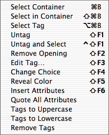

Other editing features

The submenu contains many useful features
for basic editing of HTML code.
Select Container
Selects matching
tags which include the current position or selection. Repeated, it expands
the selection. Like the "Balance" item under the Edit menu. All tags
without a corresponding closing tag are ignored. As a simple example let us
say you have the text
here is some text <B>blah| blah</B> some more blah
then Select Container will select
here is some text <B>blah blah</B> some more blah
Select in Container
Selects the content of matching tags which include the current position or
selection. As a simple example let us again
say you have the text
here is some text <B>blah| blah</B> some more blah
then Select in Container will select
here is some text <B>blah blah</B> some more blah
Select Tag
Selects the first tag at or to the left of the current position. Repeated,
it will jump to the next tag to the left. As a simple example let us again
say you have the text
here is some text <B>blah| blah</B> some more blah
then Select Tag will select
here is some text <B>blah blah</B> some more blah
Untag
Removes a tag pair surrounding the current position or selection. All tags
without a corresponding closing tag are ignored. As a simple example let us again
say you have the text
here is some text <B>blah| blah</B> some more blah
then Untag will remove the tags to give you
here is some text blah| blah some more blah
Untag and Select
Removes a tag pair surrounding the current position or selection and
selects the content of the tag pair. All tags without a corresponding
closing tag are ignored. As a simple example let us again say you have the
text
here is some text <B>blah| blah</B> some more blah
then Untag and Select will remove the tags and
select the text to give you
here is some text blah blah some more blah
In this example this would be useful if you want to change the B tags to I
tags. Then you have the text selected and can easily wrap it with I tags.
Remove Opening
If the first tag to
the left of the current position is a tag without a corresponding closing
tag, it is removed. As a simple example let us say you have the text
here is some text <IMG SRC="pic.gif"> blah| blah
then Remove Opening will remove the tag to give you
here is some text blah| blah
To change the attributes of the tag above or to the left of the current
position. This is done in the way explained in the section
Giving attributes to HTML elements, but this
time the dialog box (or status bar) contains the current attribute values
as default values.
If the element you want to change contains anything HTML mode does not
understand, a warning message will first be shown. If you decide to insert
a new tag, everything HTML mode does not understand will be removed.
Change Choice
To change an attribute with predefined choices, without bringing up a
dialog box. Put the insertion point at an attribute with predefined
choices. Change Choice will then change the
attribute to the next choice in the list of choices. Use Change Choice several times to go through the list. As
a simple example <P
ALIGN="CENTER"> is
changed to <P
ALIGN="RIGHT">
which is changed to <P
ALIGN="LEFT">
etc.
Reveal Color
If you move the current position to, or select any part of, a color
attribute in the document and then choose Reveal
color, the number will be replaced with its name, and if you choose
Reveal color again, the number appears again. For
example "#0000FF" is changed to "blue" and back again. This is useful if
you want to know what a cryptic color number stands for. Do not forget
that the browser only understands the number so do not leave the name in
the document.
To insert new attributes in a tag at the current position. Let's say that
the current position is at a TABLE tag. If you now use
Insert Attributes
a window is opened where you can pick new attributes for TABLE.
Shift-click to select the ones you want. The new attributes are now
inserted like this:
<TABLE CELLSPACING="|" CELLPADDING="•">•
You can now type the attribute values and use tab to jump between the
attributes. The attributes are inserted exactly in the same way as when you
use the contextual menu.
Tags to Uppercase
Transforms all tags to uppercase. If there is a selection, the code in the
selection is transformed, otherwise the whole document is transformed.
Tags to Lowercase
Transforms all tags to lowercase.
Quote All Attributes
Puts quotes around all attribute values, changing
<TAG ATTR=VAL> to
<TAG ATTR="VAL">.
This is intended to be used to make the
coloring work better. If there is a selection,
this function applies to the selection, otherwise it applies to the whole
document.
Remove Tags
Removes all tags from the text. If there is a selection the tags are
removed in that selection, otherwise they are removed in the whole
document. If tags are removed in the whole document, the text without tags
can optionally be put in a new window.
Previous page
Next page